New England Garden Design
Colonial Revival
The period between 1600-1775 was focussed on the efforts toward independence. Colonial garden plots would consist of fruit trees, vegetables, herbs and flower bulbs. New World plants were introduced to the settlers, including; Tobacco, Native Trees, and Corn, Shurbs, Vines, and Wildflowers and they were frequently used in their gardens.
Colonial Garden Design
The style of garden inspiration dervied from Tudor and Medeival designs. Many practacalities were taken into consideration: gardens were proportional to faimly size, with livestock pens and walkways in rural areas. Working class and wealthy landowners would have more elaborate gardens. Symmetrical gardens would frame walkways in a formal arrangement. Additional focal points would include wells, fountains, seating, and trees throughout.Connecticut
Florence Griswold Garden
A National Historic Landmark, the late Georgian-style mansion of the Florence Griswold Estate was built in 1871 in the Connecticut Countryside. The garden landscape was at its height in 1910 as flower gardens appear in the museums paintings during that period. There were flowerbeds that overflowed with colour and fragrance. The Victorian Period of gardening was less formal, with raised garden mixes; Phlox, Heliotrope, Iris, Peonies would be planted in graduated level, instead of mass plantings one variety. Tall Oriental Lilies, Roses, Violets and Lavendar were popular as perfumes attracting artists into the gardens. 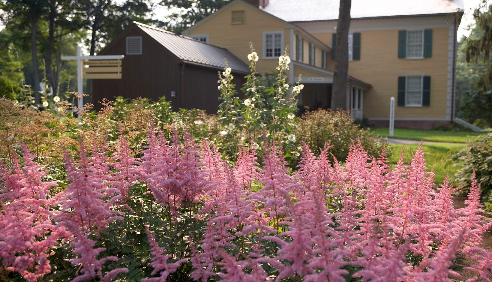
Elizabeth Park Rose Garden
The oldest municipal rose garden in the country is the Elizabeth Park Rose Garden, in Hartford Connecticut. The site began as a 2.5 acre, oblong parterre, with 190 varieties of roses. The American Rose Society selected the site as an offiical test garden in 1912. Adding a southern semi-circle section, then in 1937 the northern section completed the stadium's shape. At the garden's center is a summer house, with eight axial paths radiating outward of the central square. The paths have shaped arbours, and climbing roses. The garden has rectilinear rose beds that are evenly spaced, with north and south semi-circle with paths lined with climbing rose fences and rows of acred beds, extending from the central square. It was listed to the National Register of Historic Places in 1983. 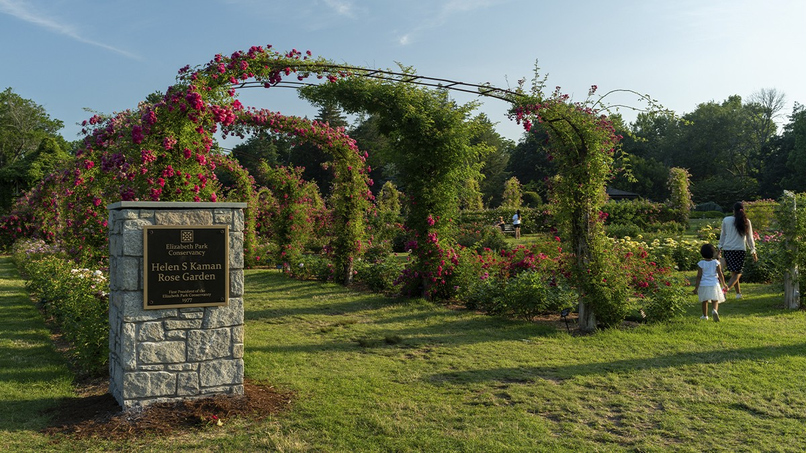Maine
Coastal Maine Botanical Garden
The largest garden in New England, there are more than 300 acres open to all visitors. 148 acorss rocky coastal forest, a Butterfly House, Dahlia and Iris Garden, Native Bee Exhibit, the Great Lawn, Giles and Rhododendron and Perennial Garden, Lerner Garden of the Five Senses, the Arbor Garden, Burpee Kitchen Garden, a Childrens Garden, Haney Hillside Garden, Fairy House Village, Vayo Meditation Garden, Cleaver Lawn, a Pond Garden, and a Shoreland Trail. 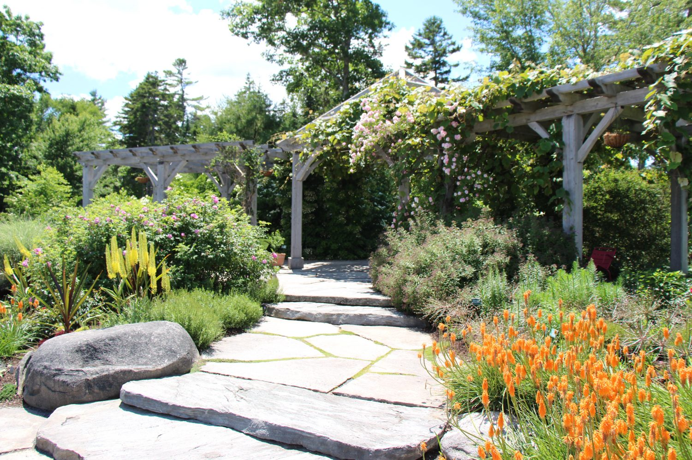Massachusets
New England Botanical Garden
The Worcester County Horticultural Society was founded in 1842 in Boylston, Massachusets. The Botanical Garden opened in 1986, with over 200 acres of conservatories, formal and naturalistic gardens, walking trails and pathways. The have developped Conservation Initiatives, Ecological Horticulture and Sustainability in the gardens, reducing the environmental impact. 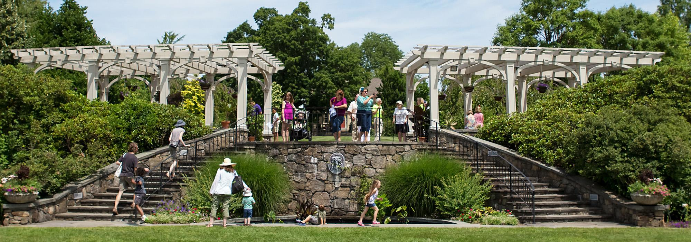
New York
Elgin Botanical Garden
The Elgin Botanic Garden was established in 1801 in New York City, between what is now 47th and 51st streets and Fifth and Sixth Avenues (Rockefeller Center). Named after the father of David Hossacks father's birthplace in Scotland. A catalog published in 1806 as the Descripton of Elgin Garden, outlines the varied collection of the Botanical garden; Magnolias, Rhodedendron and Willows, Nymphoea, Pontederia, and 2000 other species housed on the property. Ornamental trees and shrubs were maintained in the greenhouses. The belt of forests consisted of species of Chestnut, Sugar Maple, Oak, Mountain Ash, Willow, Locust, Poplar, and the Elm. 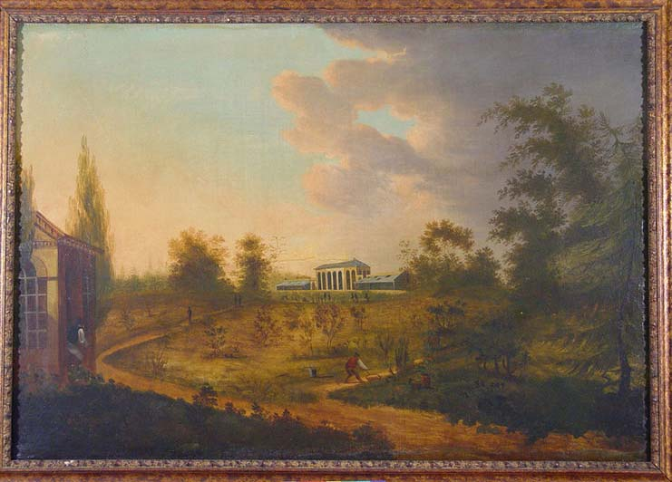Long Island
Planting Fields Arboertum
The property is on the National Register as a former estate ofthe W.R. Coe family. Rolling lawns, gardens, natural walks and woodlands, greenhouses with the largest colllection of Camellias in the surrounding area. As well as Hibiscus, Orchids and Succlents.
Bayard Cutting State Park
With original plans drawn by Frederick Law Olmsted in 1887, the clearing was filled with oaks and years later a conifer collection was added. Currently there are Fir, Spruce, Pine, Hemlock, Yew, Cypress, and several other species. Dwarf Evergreens, Rhodedendron, Asaleas, Hollies, Wildflowers and Daffodils grow on the property. Pons and streamlets flow through the land that hosts aquatic birds, and small wildlife. 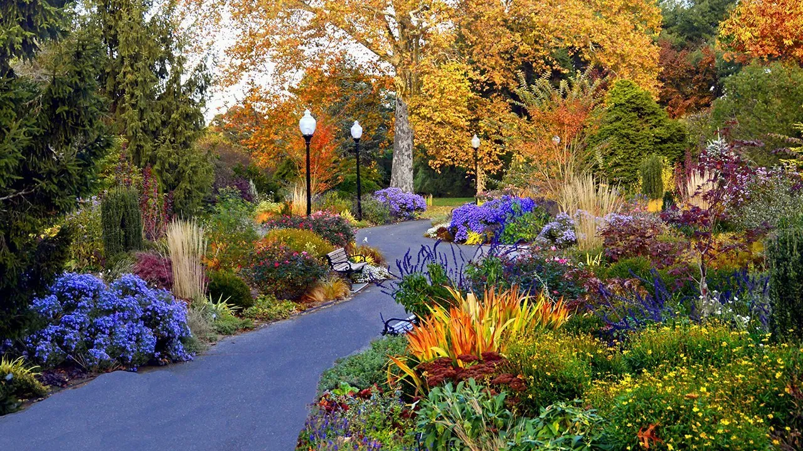Westbury Gardens
List on the National Register of Historuc Places, the home of John S. Phipps was completed in 1906. The mansion sits upon 200 acres, with formal gardens, landscaped grounds, woodlands, ponds and lakes. In 1959, it was opened as a non profit charity to the public to access 216 acres. The English style perennials include; Foxglove, Delphiniums and herbaceous plants. 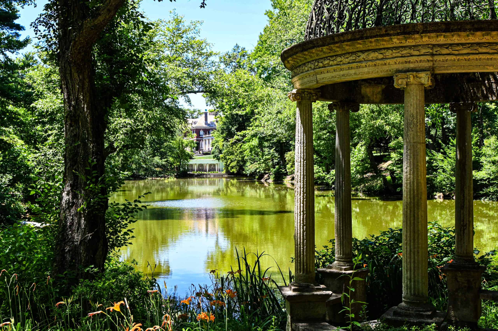Rhode Island
The Elms' Garden
The Elms is one of the iconic Gilded Age Mansions in Newport, Rhode Island. The summer house of businessman Edward Julius Berwind was completed in 1901 with Classical Revival Gardens. The property includes specimen trees, a large lower garden, fountains, a marble pavillion, a sunken garden and a carriage house. It is designated as a National Historic Landmark and has been open to the public since 1962. 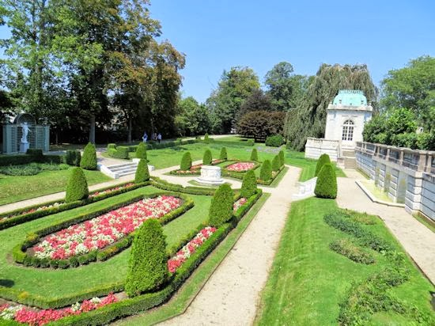
The Breakers' Garden
Cornelius Vanderbilt II's Newport summer cottage, is the palatial villa built in 1893. The gravel driveway is lined with Pin Oaks, and Red Maples. Trees that were imported include: North African Blue Atlas Cedar, Japanese Yew, Pfitzer Juniper and Arbor Vitae, Chinese Juniper and Dwarf Hemlock are neatly clipped. The formally landscaped terrace hosts a south parterre garden which grows: pink and white Alyssum, Blue Ageratum, Rhodedendrons, Mountain Laurel, Dogwoods and other flowering shrubs. 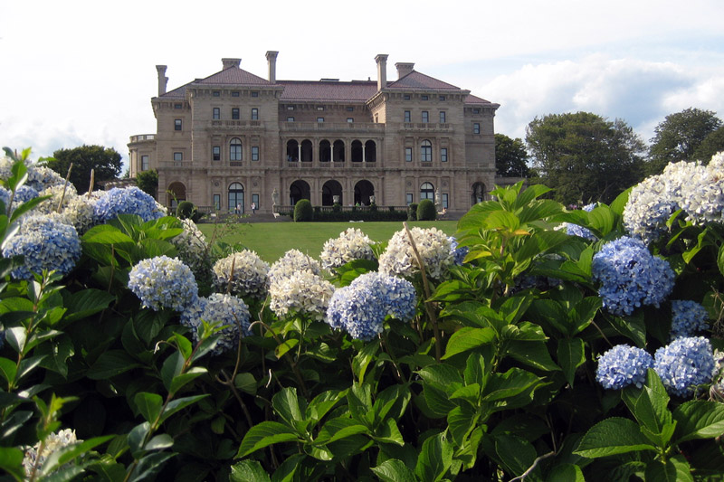
Marble House' Garden
Designated as to the National Register of Historic Places and a Landmark in 2006, the Gilded Age summer cottage estate of William Kissam Vanderbilt began work in 1888 and was completed in 1892. There is a Chinese Tea house modeled by the 12th century Song Dynasty in the lawn. The grounds were designed by landscape architect Ernest W. Bowditch. 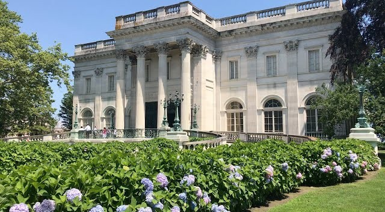
Rosecliff's Garden
Built it 1902 for Theresa Fair Oelrichs, The stairway drops to a terraced lawn facing the ocean where The Breakers Estate is visible from the shore. A terrace garden is planted around a central fountain. Parterres lined flower beds are filled with Roses, and the pathways are covered in pergolas. The lawn facing the ocean has statues of swans, Cherubs and Eagles placed throughout. 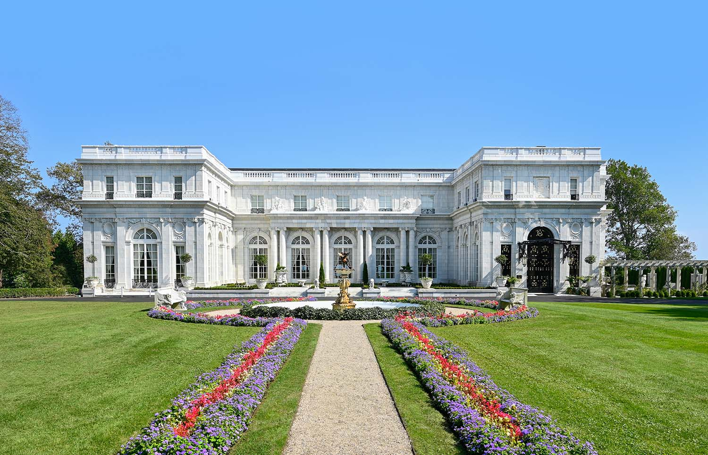Philadelphia
Springettsbury
The property of Springettsbury is an excellent example of early landscape architecture. Located in Philadelphia, Pennsylvania, William Penn was the English Quaker Proprietor of Pennsylvania when he first visited in 1682. The estate was passed down through generations, and it wasn't until 1740 that "The Proprietor's Garden" was designed in ancient style. A hornbeam, fishpond, a parterre, labrynth, spruce topiary and a hedge surrounding it. An orchard thrived with Lime trees, Pears, Peaches, Cherries, Figs and Grapes. A Botanical garden was developed several miles down the Schuylkill River. Lastly, the deer park had deer imported from England, as well as pheasants, and wild turkeys. Penn was one of the first to import vines from Bordeaux, and after establishing a Vineyard Hill on the porperty, wich didn't start producing wine until 1741 when the first natural produced American European hybrid. Penn return to England, and made note that the estate should remain an English garden; Magnolia, Azalea, Rhododendron and Laurel. Although the estate was consumed by fire in 1807, the Pensbury Manor House and gardens, William's country house remains a place to explore.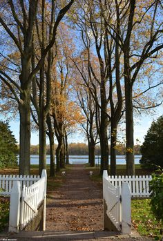